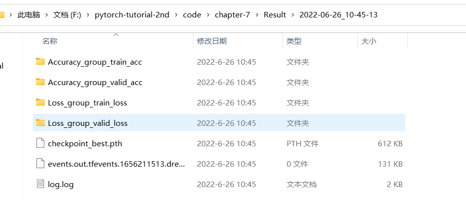

7.4 模型训练代码模板
一个良好的训练代码，可以有助于分析和超参调优，本节将以torchvision提供的分类模型训练代码为基础，编写适合自己的训练代码框架。
torchvision还提供了分割、检测、相似性学习和视频分类的 训练脚本，可以参考https://pytorch.org/vision/stable/training_references.html。
在分类的train.py中，共计501行代码，下面我们提炼出核心内容，在cifar10数据集上完成resnet-8的训练。
提炼后，代码核心内容包括：
- 参数设置部分采用argparse模块进行配置，便于服务器上训练，以及超参数记录；
- 日志模块，包括logging模块记录文本信息.log文件，以及tensorboard部分的可视化内容；
- 训练模块封装为通用类——ModelTrainer
- 模型保存部分
一、参数设置
在服务器上进行训练时，通常采用命令行启动，或时采用sh脚本批量训练，这时候就需要从命令行传入一些参数，用来调整模型超参。
例如学习率想从0.1改为0.01，按以往代码，需要进入.py文件，修改代码，保存代码，运行代码。
这样操作明显欠妥，因此通常会采用argparse模块，将经常需要调整的参数，可以从命令行中接收。
在代码中，采用了函数get_args_parser()实现，有了args，还可以将它记录到日志中，便于复现以及查看模型的超参数设置，便于跟踪。
二、日志模块
模型训练的日志很重要，它用于指导下一次实验的超参数如何调整。
代码中采用借助logging模块构建一个logger，并且以时间戳（年月日-时分秒）的形式创建文件夹，便于日志管理。
在logger中使用logger.info函数代替print函数，可以实现在终端展示信息，还可以将其保存到日志文件夹下的log.log文件，便于溯源。
三、训练模块
训练过程比较固定，因此会将其封装成 train_one_epoch和evaluate的两个函数，从这两个函数中需要返回我们关心的指标，如loss，accuracy，混淆矩阵等。
四、指标统计模块
之前的代码中，loss和accuracy需要手动记录每个值，然后取平均，除了它们两个，深度学习训练中还有许多指标都需要类似的操作。
因此，可以抽象出一个AverageMeter类，用于记录需要求取平均值的那些指标。
AverageMeter类的使用，使得代码更简洁，下面一同分析一下。
运行代码当训练完成后，可在输出目录下得到以时间戳为文件夹的日志目录，里面包括loss、accuracy、混淆矩阵可视化图，最优模型checkpoint。

小结
训练模型的代码结构可以千变万化，每个人结合自己的风格进行编写，本节代码也是吸取了多个代码的精华，当然还有不足之处，后续会慢慢补上，这里提供一个整体思路，知道代码中需要什么。
建议参考以下训练代码结构：
PyTorch ImageNet example
(https://github.com/pytorch/examples/tree/master/imagenet)
NVIDIA CUDA specific speedups adopted from NVIDIA Apex examples
(https://github.com/NVIDIA/apex/tree/master/examples/imagenet)
TIMM:
https://github.com/rwightman/pytorch-image-models/blob/master/train.py